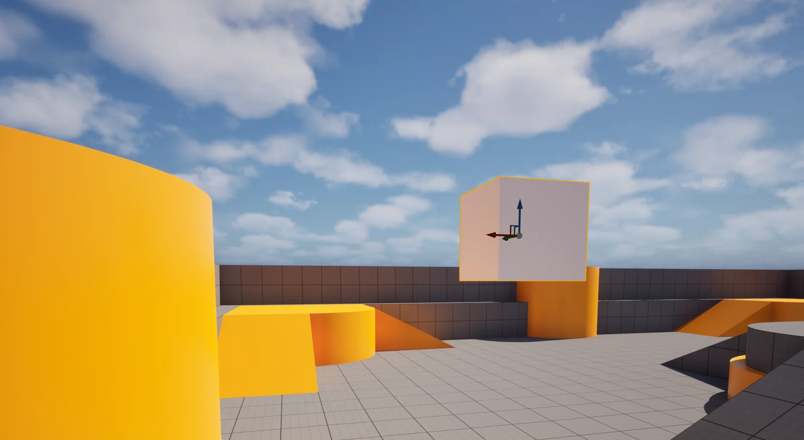
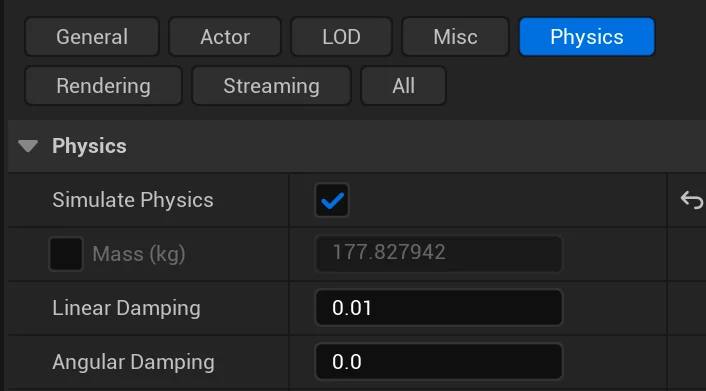
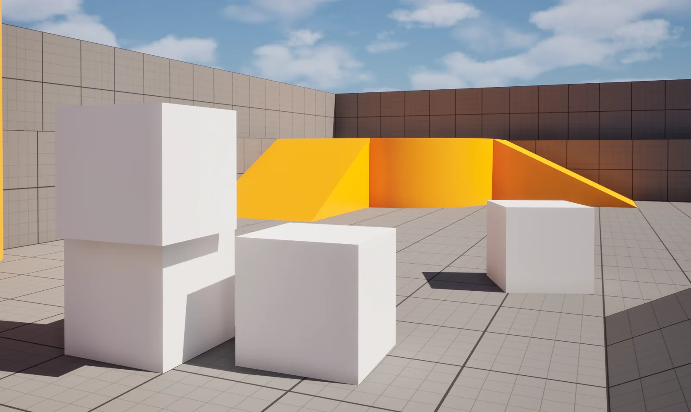
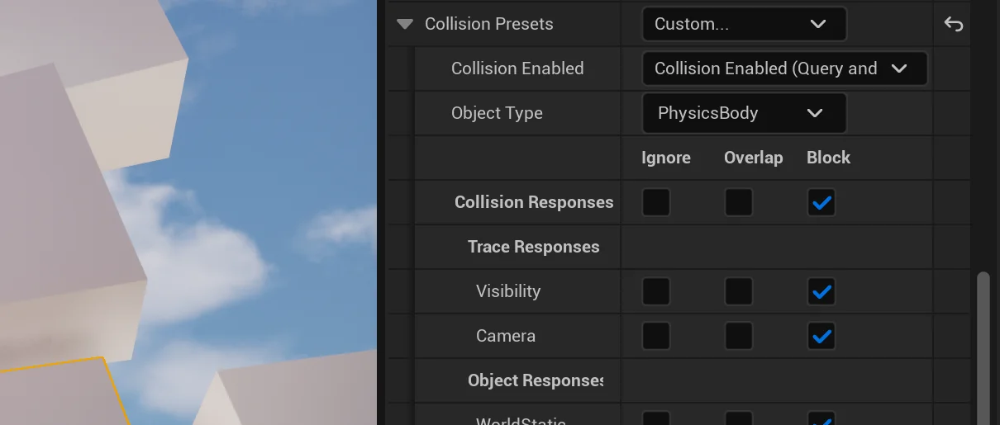
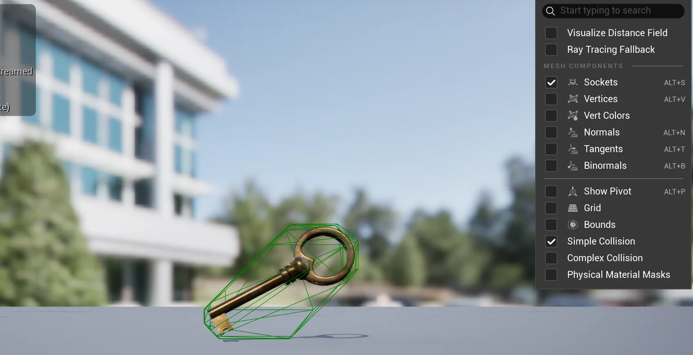
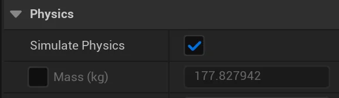
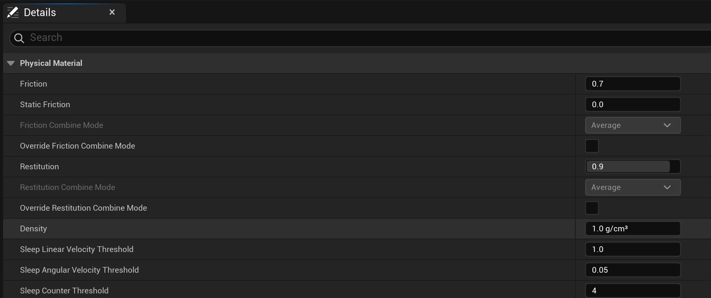
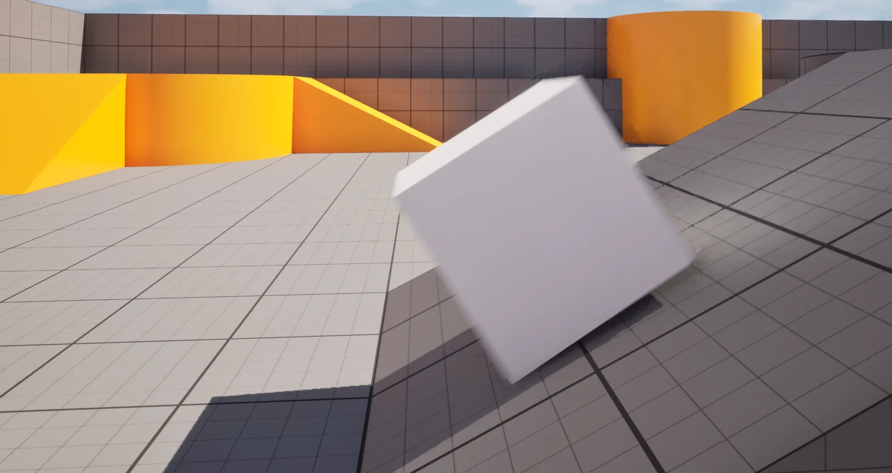
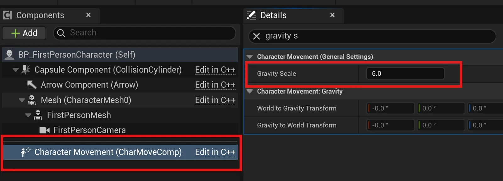
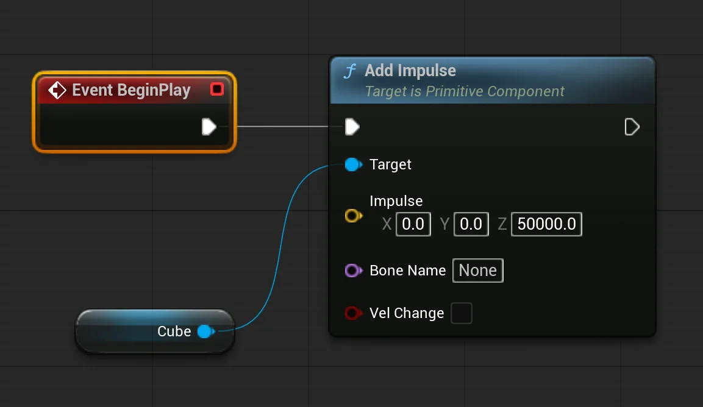

Learn the fundamentals of Unreal’s physics engine.
0. Introduction
A. Outcome
This tutorial’s outcome: A small physics playground: objects that fall, tumble, and bounce — and you in control of the three dials that matter: how heavy an object is, how bouncy it is, and how strong gravity is.
The essential lesson is that basic physics in Unreal is not programming — it is a checkbox plus a handful of properties. The skill is knowing which properties, and what each one actually changes. [image: a stack of crates mid-topple, a ball bouncing, in a simple blockout level]
B. Learning Objectives
Develop working knowledge of physics fundamentals:
Simulate Physics— the checkbox that hands an object to the physics engine- collision — why physics requires it, and simple vs. complex collision shapes
Mass (kg),Linear Damping,Angular Damping— weight and air resistance- Physical Materials —
Restitution(bounciness) andFriction- gravity — per-object (
Enable Gravity), per-world (Global Gravity Z), per-character (Gravity Scale)Add Impulse— giving a physics object a push from a Blueprint- OnComponentHit — reacting when physics objects strike things
Review:
- Collision Components and OnComponentBeginOverlap (Tutorial 101)
1. The Foundation: Simulate Physics
An object falls, tumbles when clipped, and can be shoved around by the player — without a single Blueprint node.
A. A Place to Drop Things
Open any project with a playable character — a previous project can work, or a fresh first/third person template.
From the Place Actors window, drag in a
Cube(from the Shapes category) into the level. Use the Transform Gizmo to lift it well above the ground — two or three player-heights up.
Press Play. The cube hangs in the air. By default, every Static Mesh in Unreal is exactly that — static, like a wall.
B. Hand It to the Physics Engine
Select the cube. In the Details panel, find the Physics section and check
Simulate Physics.
Press Play. The cube drops, lands, and settles. Walk into it — it slides and topples when you push it.
Place four or five more cubes, check
Simulate Physicson each, and stack them into a tower. Play, and knock it over.
C. One Rule Before Going Further
Physics simulation has one hard requirement: the object must have simple collision. The engine’s Basic Shapes (Cube, Sphere, Cylinder) all come with it by default, which is why this is working. Meshes you bring in from elsewhere — Fab assets, your own models — sometimes don’t. In this case, the object falls through the floor.
Chapter 2 explains such possibilities. If you’re only using basic shapes today, you can skim it.
2. Collision: What Lets Objects Touch
Why some meshes fall through the floor, and how to give any mesh a physics body.
A. Block, Overlap, Ignore
Every collidable object in Unreal carries a set of collision responses that decide what happens when it meets another object.
- Block — the two objects can’t pass through each other. This is what physics needs: a falling crate lands on the floor.
- Overlap — the objects pass through each other, but the engine can fire an event at the moment they cross. This is Tutorial 101’s pressure plate — OnComponentBeginOverlap.
- Ignore — they pass through silently. Nothing fires.

You met overlap events in Tutorial 101. Blocking has its own event: OnComponentHit fires when a physics object strikes something — useful later for playing a sound on impact.
B. Add Simple Collision to a Mesh
Find any Fab prop, or to follow along. Double-click the asset in the Content Browser to open the Static Mesh Editor.
To see what collision it already has: from the editor’s toolbar, enable Collision display (the Collision dropdown →
Simple Collision). Green wireframe shapes are its simple collision.
To add some, open the Collision dropdown menu in the Static Mesh Editor’s menu bar:
Add Box Simplified Collision— a single box around the mesh. Right for crates, books, furniture — most props.Add Sphere Simplified Collision— for balls and roundish things you want to roll.Add 26 DOP Simplified Collision— or one of the others in that list. The engine fits a tighter hull around an irregular shape. Use when a box would be too crude (a statue, a chair).Save the asset. Back in the level, the mesh can now
Simulate Physics.Ask your LLM why
In the Unreal tutorial I’m following, I can choose “simple collision” — a box or hull wrapped around the mesh — instead of using a detailed mesh. Why is simulating with a better-shaped mesh a problem?
3. Weight: Mass and Damping
Two cubes, same size — one shoves aside like cardboard, one barely moves.
A. Mass
Select a simulated cube. In Details → Physics, find
Mass (kg). Unreal computed this automatically from the object’s volume — scale the cube bigger and the mass climbs on its own.
To take control, check the small override box next to
Mass (kg)and type a value.Make two same-sized cubes: one at
5kg, one at500kg. Play, and walk into each. The light one skids away from you; the heavy one barely acknowledges you. Mass is how objects resist being pushed — by the player, by impulses, by each other.Mass does not change how fast an object falls. Drop the 5 kg and 500 kg cubes together — they land together. (Galileo said so; Unreal agrees.) If you want something to fall slower, that’s gravity or damping — the next sections — not mass.
B. Damping — Air Resistance
Two properties just below mass:
Linear Damping— resistance to moving. At0objects fall at full acceleration. Raise it and a falling object drifts down, like falling through water. Values between1and10are already noticeable.Angular Damping— resistance to spinning. Raise it and a tumbling object settles slowly instead of rolling around.Damping is a path to a dreamlike, floaty fall for a single object.
4. Bounciness: Physical Materials
Two identical spheres dropped together — one bounces away, one lands dead.
A. Make a Physical Material
Bounciness doesn’t live on the mesh — it lives in a small asset called a Physical Material, which describes what a surface is made of.
Right-click in the Content Browser → Physics → Physical Material. If asked to pick a class, choose
PhysicalMaterial. Name itPM_Bouncy(thePM_prefix, same spirit asBP_andM_).Double-click it. Two properties matter today:
Restitution— bounciness,0to1. At0, the object lands dead. At0.9, it’s rubber. SetPM_Bouncyto0.9.Friction— how much surfaces grip when sliding.0is ice. Leave it at default for now.
B. Apply It
Select one of your
Cubein the level. In Details, find the Collision section →Phys Material Override→ choosePM_Bouncy. (Make sure theMassis not high nor there is much damping).Perhaps you’ll prefer to add a
Sphereand give it thePM_Bouncy. It is easier to notice restitution with spheres.Make a
PM_Ice(Friction0) and apply it to a ramp or floor section to feel what friction does to sliding.
5. Gravity: Three Dials
The same falling crate on Earth, on the moon, and in a dream.
A. Per Object — Enable Gravity
In Details → Physics, next to
Simulate Physics, isEnable Gravity. Uncheck it and the object ignores gravity entirely — it hangs where it is, but it still simulates: walk into it, and it drifts off in that direction, like in zero-g.
B. Per World — Global Gravity
Gravity’s strength is a world property. Open the World Settings panel (Window → World Settings), find the Physics section, check
Override World Gravity, and setGlobal Gravity Z.The default is
-980— Earth gravity, in centimeters per second squared (Unreal’s units are centimeters). Some values worth feeling:
-980— Earth. The default.-162— the moon.-100or so — dream-slow.This affects every physics body in the level — and, importantly, it also affects the player. Try jumping.
Ask your LLM why
In the Unreal tutorial I’m following, gravity is set to -980 by default. Why is it negative, and why 980?
C. Per Character — Gravity Scale
Your player character doesn’t use
Simulate Physics— characters are driven by theCharacter Movementcomponent, which has its own dial:Gravity Scale. It’s a multiplier on world gravity: at1.0, the character falls and jumps normally; at6.0, it will compensate for the lowGlobal Gravity Zyou set in 5B, for example.
This is how you split the difference. Want objects to fall dream-slow while the player still jumps normally? Lower
Global Gravity Zfor the world, then raise the character’sGravity Scaleto compensate.
6. A Push: Add Impulse
Tutorial 101’s pressure plate, repurposed: step on the plate, and a stack of crates is blasted aside.
Use What You Have Learned
This chapter is light on instructions on purpose — you’ve built every piece of it before.
- Make a Blueprint name
BP_CrateforImpulse.- On
BeginPlaycallAdd Impulseon its Static Mesh component.- The
Impulseinput is a Vector — direction times strength. TryX=0, Y=0, Z=50000for a launch straight up. If the crate doesn’t move, the impulse might be too small for its mass: a 500 kg crate needs a much bigger shove than a 5 kg one.
What you can now build
- A stack of crates, books, or debris the player can topple and shove through
- Objects that drop, tumble, and settle when something releases them — a shelf giving way, things spilling from a container
- Per-object weight: cardboard-light props next to immovable-heavy ones, each responding honestly to the player
- A bouncing ball — and surfaces that are bouncy or icy by material
- Moon levels, dream-slow falls, zero-g props — gravity tuned per object, per world, and per character independently
- A trigger that launches, scatters, or knocks over physics objects with a single node
Example deviations you are ready for
- Swap the crates for any Fab prop — add simple collision in the Static Mesh Editor first, then
Simulate Physicsworks the same - A sphere with
Add Impulseaimed horizontally is bowling — roll something into a group of objects and let physics scatter them - A trapdoor floor: a platform whose
Simulate Physicsturns on from a trigger dropping whatever stood on it - Falling debris timed in sequence — combine with Tutorial 104’s staggered events so objects drop one after another, not all at once
- A bouncy-castle room:
PM_Bouncyapplied to the floor instead of the objects